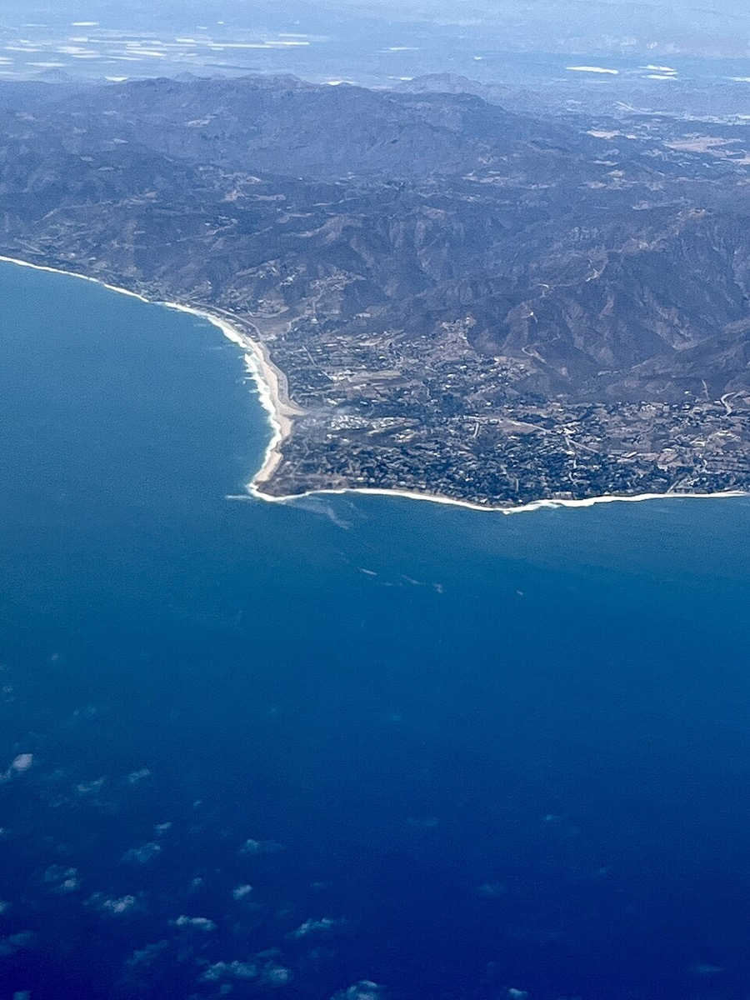
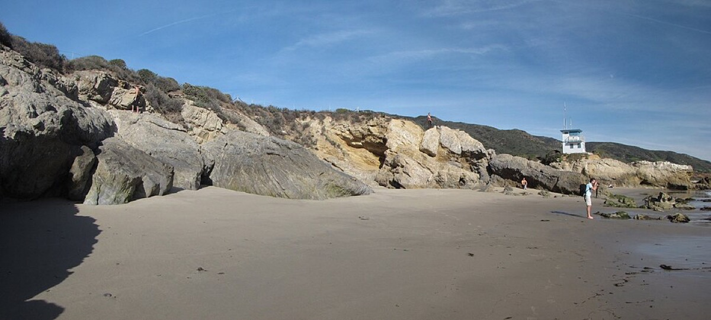
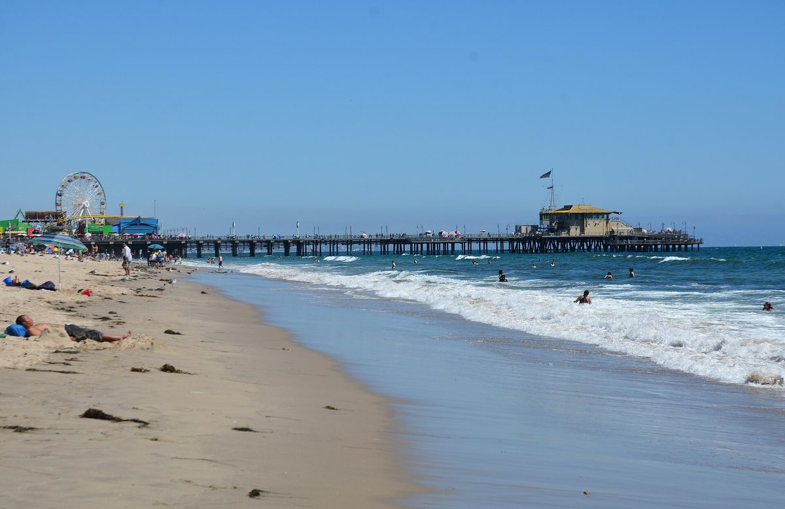
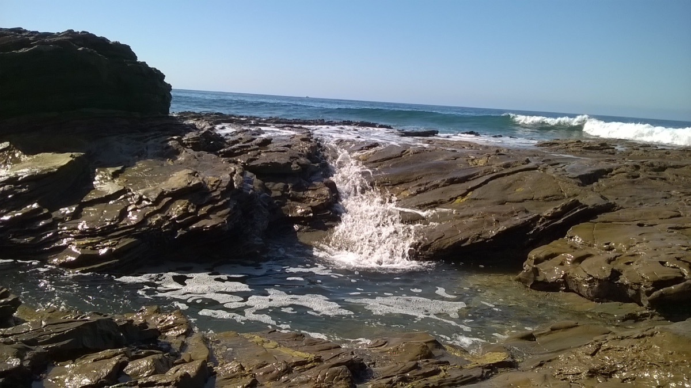
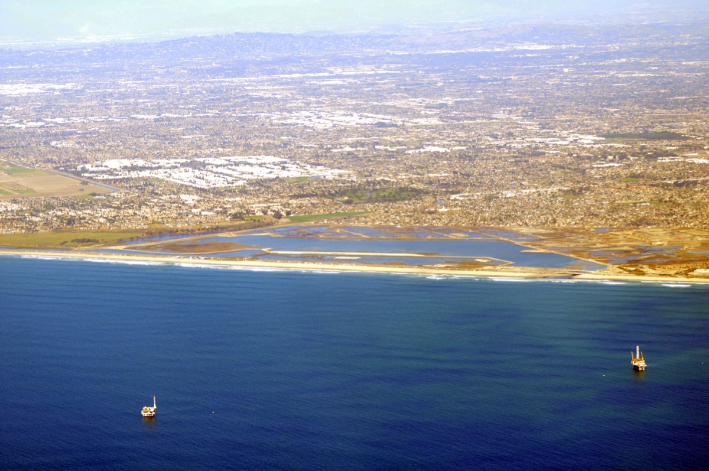

Beaches
19 beaches · 211 gallery photos
Beaches
19 beaches · 211 gallery photos

Point Dume State Beach
Lower lot closedCliff-top ocean views and a sandy beach below.
Point Dume State Beach
Lower lot closedCliff-top ocean views and a sandy beach below.- Parking
- The Westward Beach Road closure blocks access to the lower lot. Check State Parks for current access. Parking info ↗
- Cost
- Lower lot unavailable. Check the park notice for access updates. Park info ↗
- Bike path
- 👎 No dedicated beachfront bike path.

Leo Carrillo State Beach
$12/dayRocky coves, sandy stretches and sea caves.
Leo Carrillo State Beach
$12/dayRocky coves, sandy stretches and sea caves.- Parking
- Use the main state park entrance off PCH. The park reports that the North Beach access road is closed.
- Cost
- $12 regular vehicle day use. Park info ↗
- Bike path
- 👎 No dedicated beachfront bike path.

El Matador State Beach
$3/hr or $10/dayA small, rocky beach below the bluffs, reached by a trail and stairs.
El Matador State Beach
$3/hr or $10/dayA small, rocky beach below the bluffs, reached by a trail and stairs.- Parking
- Bluff-top day-use lot off Pacific Coast Highway.
- Cost
- $3 per hour or $10 per vehicle for the day. Holiday rates may vary. Rates ↗
- Bike path
- 👎 No beachfront bike path. Access to the sand is by foot.


.jpg)
.jpeg)


Will Rogers State Beach
Varies by lotA long sandy shoreline with the coastal bike path running beside it.
Will Rogers State Beach
Varies by lotA long sandy shoreline with the coastal bike path running beside it.- Parking
- LA County lists rates by lot, season and day. Check the specific entrance’s posted rate. Parking info ↗
- Cost
- Check the county fee schedule for the lot and holiday rate. Rates ↗
- Bike path
- The paved Marvin Braude Bike Trail starts here and runs south toward Santa Monica. Route info ↗


.jpg)


.jpg)

Santa Monica State Beach
$8–$12/entryFerris wheel, broad sandy shore and ocean views.
Santa Monica State Beach
$8–$12/entryFerris wheel, broad sandy shore and ocean views.Start at the pier and take in the shoreline from above before heading down to the sand. Google Maps photos and directions ↗
- Parking
- Central beach lots near the pier (1N–3N and 1S–3S).
- Cost
- November rates are $8 per entry on weekdays and $12 on weekends. Valid disabled placards pay half the posted rate. Rates ↗
- Bike path
- Take the paved Marvin Braude Bike Trail south to Venice. Route info ↗


_beach_(42450520574).jpg)


Venice Beach
$5–$9Palm trees, the boardwalk and the skatepark.
Venice Beach
$5–$9Palm trees, the boardwalk and the skatepark.Start near Windward Avenue for the boardwalk and skatepark. Come back toward sunset for palm silhouettes. Google Maps photos and directions ↗
- Parking
- South City Lot at 2100 Ocean Front Walk, near the skatepark and Muscle Beach.
- Cost
- Published winter rates are $5 before 9 a.m. and $9 after. Check the posted holiday rate. Rates ↗
- Bike path
- Ride the paved Marvin Braude Bike Trail north to Santa Monica. Route info ↗


.jpg)
.JPG)
.jpg)
.jpg)

Manhattan Beach
$3.50/hrWide sand, volleyball courts and the paved Strand beneath the beachfront homes.
Manhattan Beach
$3.50/hrWide sand, volleyball courts and the paved Strand beneath the beachfront homes.Google Maps photos and directions ↗
- Parking
- Pier lots at the foot of Manhattan Beach Boulevard.
- Cost
- $3.50/hour at the pier lots. Downtown city lots are $2.50/hour. Rates ↗
- Bike path
- Follow the Strand south to Hermosa Beach. Route info ↗


.jpg)
.jpg)
.jpg)


Hermosa Beach
$3.50/hrA wide volleyball beach, with Pier Plaza opening straight onto the Strand.
Hermosa Beach
$3.50/hrA wide volleyball beach, with Pier Plaza opening straight onto the Strand.Google Maps photos and directions ↗
- Parking
- Lot A at 1101 Hermosa Ave, near Pier Plaza.
- Cost
- $3.50/hour at Lots A, B and C. Street meters are $3/hour. Rates ↗
- Bike path
- The Strand runs north toward Manhattan Beach and south toward Redondo. Route info ↗


.jpeg)
.jpg)


Redondo Beach
$2.25/hrThe pier and marina sit beside a long stretch of beachfront south of the harbor.
Redondo Beach
$2.25/hrThe pier and marina sit beside a long stretch of beachfront south of the harbor.Google Maps photos and directions ↗
- Parking
- Pier and Plaza parking structures or the Marina parking lot.
- Cost
- The city listed $2.25/hour for the pier and marina lots effective August 20, 2026. Rates ↗
- Bike path
- The Marvin Braude route continues south along the beachfront toward Torrance Beach. Route info ↗


.jpg)


.jpg)

Long Beach
$2/hrPalm trees, lifeguard towers and a long sandy shore.
Long Beach
$2/hrPalm trees, lifeguard towers and a long sandy shore.Start at Belmont Shore for views of the sand from the waterfront path. Google Maps photos and directions ↗
- Parking
- Granada Beach Lot at 5100 E Ocean Blvd.
- Cost
- $2/hour from 8 a.m. to 6 p.m., including holidays. Rates ↗
- Bike path
- The paved Shoreline Pedestrian Bikepath runs west from Belmont Shore toward downtown. Route info ↗


.jpeg)


Huntington Beach
Up to $15/dayPier views, surfers and a wide stretch of sand.
Huntington Beach
Up to $15/dayPier views, surfers and a wide stretch of sand.Start at the pier for a view of the surf and the beach in both directions. Google Maps photos and directions ↗
- Parking
- Main Promenade garage at 200 Main St., a short walk from the pier.
- Cost
- Published garage rate is 90 minutes free, then $1 per 20 minutes, up to $15/day. Check posted rates. Rates ↗
- Bike path
- Pick up the paved beachfront bike path by the pier and ride south toward Huntington State Beach. Route info ↗


.jpg)
.jpg)
.jpg)

Newport Beach
$4.10/hrPalm-lined oceanfront and a classic pier.
Newport Beach
$4.10/hrPalm-lined oceanfront and a classic pier.Start at Newport Pier near McFadden Square and follow the oceanfront path. Google Maps photos and directions ↗
- Parking
- West Ocean Front Lot at 2100 W Oceanfront, by Newport Pier.
- Cost
- $4.10/hour. Check the space’s time limit. Valid placards park free in this lot. Rates ↗
- Bike path
- The shared paved path from Newport Pier to Balboa Pier is 1.74 miles each way. Route info ↗


Corona del Mar State Beach
$1.80–$4.80/hrA sandy cove framed by rocky bluffs.
Corona del Mar State Beach
$1.80–$4.80/hrA sandy cove framed by rocky bluffs.Visit Lookout Point for a view over the cove. Google Maps photos and directions ↗
- Parking
- Main Beach pay lot at the bottom of the beach access road.
- Cost
- October–April weekdays $1.80/hour. Weekends $3/hour early and late or $4.80/hour from 9 a.m. to 6 p.m. Daily cap $18.15. Placard holders pay the same rate. Rates ↗
- Bike path
- 👎 No dedicated beachfront bike path at the cove.


Zuma Beach
$3–$8Broad sand backed by mountains and beachside parking.
Zuma Beach
$3–$8Broad sand backed by mountains and beachside parking.Google Maps photos and directions ↗
- Parking
- County lots off Pacific Coast Highway at Zuma Beach.
- Cost
- Published winter rates run $3–$6 on weekdays and $8 on weekends and holidays. Rates ↗
- Bike path
- 👎 No dedicated beachfront bike path at Zuma.


.jpg)
.jpg)
_(3125721724).jpg)
_(3124893377).jpg)
_(3124893483).jpg)
_(3125721798).jpg)
.jpg)

Dockweiler State Beach
$6–$8 daytimeWide sand, lifeguard towers and a paved bike path right behind the beach.
Dockweiler State Beach
$6–$8 daytimeWide sand, lifeguard towers and a paved bike path right behind the beach.Google Maps photos and directions ↗
- Parking
- Dockweiler Youth Center lot at 12505 Vista del Mar.
- Cost
- Winter daytime rate is $6 on weekdays and $8 on weekends and county holidays. Early and late rates are lower. Rates ↗
- Bike path
- The Marvin Braude trail runs through Dockweiler. Ride south toward El Segundo and Manhattan Beach. Route info ↗

.jpg)


.jpg)
.jpg)

.jpg)
.jpg)

.jpg)

Seal Beach
$3/hr · $15 maxA sandy beach around a long wooden pier at the end of Main Street.
Seal Beach
$3/hr · $15 maxA sandy beach around a long wooden pier at the end of Main Street.Google Maps photos and directions ↗
- Parking
- Use the 8th or 10th Street beach lot near the pier, or the 1st Street lot farther west.
- Cost
- $3/hour, $15 daily maximum. After 6 p.m., $4 flat. Rates ↗
- Bike path
- For a longer ride, look for the San Gabriel River Trail near the river mouth at the west end of town. Route info ↗


.jpg)

.jpg)

Crystal Cove State Park
$15–$20/daySandy coves and old beach cottages below the coastal bluffs.
Crystal Cove State Park
$15–$20/daySandy coves and old beach cottages below the coastal bluffs.- Parking
- Park at Los Trancos for the Historic District, or at Pelican Point for the bluff trails.
- Cost
- $15 regular day use. A $20 special rate can apply on holidays or weekends. Rates ↗
- Bike path
- Ride the paved bluff-top path. Beach access from the bluffs can be steep.

Bolsa Chica State Beach
$15/dayA broad stretch of sand with lifeguard towers and a paved waterfront path.
Bolsa Chica State Beach
$15/dayA broad stretch of sand with lifeguard towers and a paved waterfront path.- Parking
- State beach lots off Pacific Coast Highway at 17851 Pacific Coast Highway.
- Cost
- $15 regular vehicle day use. Rates ↗
- Bike path
- Follow the paved beachfront path south toward Huntington Beach Pier.

Laguna Beach
$3/hrRocky coves, palms and views from the bluffs.
Laguna Beach
$3/hrRocky coves, palms and views from the bluffs.Start at Main Beach for ocean views from the boardwalk. Google Maps photos and directions ↗
- Parking
- Broadway Lot (Lot 1) or Peppertree Lot (Lot 2) near Main Beach.
- Cost
- $3/hour in the off-season, with a 3-hour limit. Rates ↗
- Bike path
- 👎 No bike path at Main Beach. Bicycles are prohibited on the boardwalk.


Things to Do
Theme parks & studio tours
Universal Studios Hollywood
From $109 $10–$40A full-day park for the Studio Tour, Super Nintendo World and movie-themed rides. CityWalk is next to the entrance.
Universal Studios Hollywood
From $109 $10–$40A full-day park for the Studio Tour, Super Nintendo World and movie-themed rides. CityWalk is next to the entrance.1-day admission from $109 online · Price varies by date · Open Thanksgiving
Parking · General parking is $40 before 5 pm and $10 after 5 pm. Parking info ↗


Disneyland Park
$104–$224 $40A full-day theme park with Main Street, the castle and classic rides. Check your date before committing to tickets.
Disneyland Park
$104–$224 $40A full-day theme park with Main Street, the castle and classic rides. Check your date before committing to tickets.1-day, 1-park tickets $104–$224 depending on date · A reservation for your visit date is required
Parking · Standard car parking at Mickey & Friends, Pixar Pals or Toy Story. Parking info ↗


Warner Bros. Studio Tour Hollywood
$79 $15A guided backlot tour plus exhibits of costumes, sets and movie props. Bring photo ID if you’re 18 or older.
Warner Bros. Studio Tour Hollywood
$79 $15A guided backlot tour plus exhibits of costumes, sets and movie props. Bring photo ID if you’re 18 or older.Standard tour $79 per adult · Check holiday availability
Parking · Studio Tour garage parking is $15 per vehicle. Parking info ↗


Knott’s Berry Farm
From $65 $40Roller coasters, Ghost Town and seasonal Merry Farm decorations. A full-day option near Anaheim.
Knott’s Berry Farm
From $65 $40Roller coasters, Ghost Town and seasonal Merry Farm decorations. A full-day option near Anaheim.Day tickets from $65 online; $110 at the gate · Check your date’s price and fees
Parking · Standard parking is $40 per vehicle. Parking info ↗


Outdoors & views
Pacific Park at Santa Monica Pier
Free admission $3–$4/hrRide the Ferris wheel or stop for ocean views from the pier. The pier is free and rides cost extra.
Pacific Park at Santa Monica Pier
Free admission $3–$4/hrRide the Ferris wheel or stop for ocean views from the pier. The pier is free and rides cost extra.Free park entry · Individual rides $8–$20 · Thanksgiving hours 11 a.m.–9 p.m.
Parking · Winter Pier Deck rate is $3/hr weekdays ($15 max) and $4/hr weekends ($18 max). Parking info ↗


Point Vicente overlook
Free admission FreeOcean and lighthouse views from the bluff park. Start at the Interpretive Center parking lot and choose a short out-and-back.
Point Vicente overlook
Free admission FreeOcean and lighthouse views from the bluff park. Start at the Interpretive Center parking lot and choose a short out-and-back.Outdoor stop · Check museum hours separately
Parking · Use the Point Vicente Interpretive Center lot. Parking info ↗


Griffith Observatory
Free admission About $10/hrCity and Hollywood Sign views from the terrace, plus telescope and astronomy exhibits.
Griffith Observatory
Free admission About $10/hrCity and Hollywood Sign views from the terrace, plus telescope and astronomy exhibits.Free admission · Main-lot parking reported at $10/hour · Check posted rates and holiday hours


Venice Canals
Free admission $5–$9Walk a short stretch of canal-side paths and cross the footbridges near Venice Boulevard.
Venice Canals
Free admission $5–$9Walk a short stretch of canal-side paths and cross the footbridges near Venice Boulevard.Free outdoor stop
Parking · Nearby South City lot at 2100 Ocean Front Walk lists $5 before 9 am and $9 afterward. Check posted holiday rates. Parking info ↗


Echo Park Lake
Free admission Street / lotWalk by the water for downtown skyline views or rent a swan pedal boat.
Echo Park Lake
Free admission Street / lotWalk by the water for downtown skyline views or rent a swan pedal boat.Free park entry · 1-hour swan boat rental $13 per adult or $7.50 per child
Parking · Check posted limits around the lake. There is also a public lot at 1147 Echo Park Avenue. Parking info ↗


Korean Bell of Friendship
Free admission FreeA painted bell pavilion on a bluff above the harbor. Start near the lot for a short walk to the viewpoint.
Korean Bell of Friendship
Free admission FreeA painted bell pavilion on a bluff above the harbor. Start near the lot for a short walk to the viewpoint.Free outdoor stop
Parking · Park in the Angels Gate Park lot by the bell. Parking info ↗


Descanso Gardens
$20 FreeOak groves, streams and garden paths. Pick a short loop near the entrance or stay for a longer visit.
Descanso Gardens
$20 FreeOak groves, streams and garden paths. Pick a short loop near the entrance or stay for a longer visit.


Lake Shrine Meditation Gardens
Free admission Free with reservationA quiet lakeside garden with a windmill and lotus arch. Onsite parking is limited.
Lake Shrine Meditation Gardens
Free admission Free with reservationA quiet lakeside garden with a windmill and lotus arch. Onsite parking is limited.Free advance reservation required · Check available times
Parking · Onsite parking is limited. Reserve a visit in advance. Parking info ↗


LA County Arboretum
$18 FreeBotanical gardens with ponds, mature trees and mountain views. Start with the gardens closest to the entrance for a shorter visit.
LA County Arboretum
$18 FreeBotanical gardens with ponds, mature trees and mountain views. Start with the gardens closest to the entrance for a shorter visit.$18 adult daytime admission · Check holiday hours
Parking · Use the Arboretum’s onsite visitor lot. Parking info ↗


Rancho Los Alamitos
Free admission FreeHistoric ranch grounds with gardens and barns. Choose the self-guided grounds visit or reserve a house tour.
Rancho Los Alamitos
Free admission FreeHistoric ranch grounds with gardens and barns. Choose the self-guided grounds visit or reserve a house tour.


Los Angeles Zoo
$29 FreeAnimal exhibits and botanical gardens on a large, hilly site. Choose a few exhibits if you want a shorter walk.
Los Angeles Zoo
$29 FreeAnimal exhibits and botanical gardens on a large, hilly site. Choose a few exhibits if you want a shorter walk.$29 adult admission per city fee schedule · Confirm at checkout · Closed Thanksgiving Day
Parking · The zoo has free onsite parking. Parking info ↗


The Huntington
$29–$34 FreeChinese and Japanese gardens, art galleries and a big desert garden. Pick one or two areas for a shorter visit.
The Huntington
$29–$34 FreeChinese and Japanese gardens, art galleries and a big desert garden. Pick one or two areas for a shorter visit.Adult admission $29–$34 · Check reservations and holiday hours
Parking · Use the lot at Oxford Road and Allen Avenue. Parking info ↗


Malibu Pier
Free admission $3/hr or $12/day nearbyAn oceanfront stop for pier views and Malibu Farm. State Parks is renovating the pier. Businesses remain open.
Malibu Pier
Free admission $3/hr or $12/day nearbyAn oceanfront stop for pier views and Malibu Farm. State Parks is renovating the pier. Businesses remain open.Free pier access · Nearby Malibu Lagoon State Beach lot $3/hour or $12/day · Pier-lot rates vary


Balboa Island Ferry
$2 each way $4.50/hr nearbyCross Newport Harbor on a small car-and-passenger ferry. Walk aboard from the peninsula, then explore a short stretch of the island waterfront.
Balboa Island Ferry
$2 each way $4.50/hr nearbyCross Newport Harbor on a small car-and-passenger ferry. Walk aboard from the peninsula, then explore a short stretch of the island waterfront.$2 adult walk-on fare each way · Cash onboard · No reservation
Parking · On the peninsula side, the city lists $4.50/hr at the East Ocean Front lot near Balboa Pier. The lot is partially closed through September 2027. Parking info ↗


South Coast Botanic Garden
$18 FreeBotanical paths, mature trees and a children’s garden. Pair it with Torrance or Redondo and choose a short loop near the entrance.
South Coast Botanic Garden
$18 FreeBotanical paths, mature trees and a children’s garden. Pair it with Torrance or Redondo and choose a short loop near the entrance.$18 adult daytime admission · Check ticket availability and holiday hours
Parking · Free parking is available onsite. Parking info ↗


Greystone Mansion & Gardens
Free admission FreeExplore the estate’s courtyards, fountain and city views. The grounds have slopes and stairs. Check separately for mansion interior events.
Greystone Mansion & Gardens
Free admission FreeExplore the estate’s courtyards, fountain and city views. The grounds have slopes and stairs. Check separately for mansion interior events.


Exposition Park Rose Garden
Free admission $20 standardPaths circle a fountain and flower beds between the Science Center and USC. It’s easy to pair with the museums next door.
Exposition Park Rose Garden
Free admission $20 standardPaths circle a fountain and flower beds between the Science Center and USC. It’s easy to pair with the museums next door.Free garden entry · Exposition Park parking $20 standard, $24 special event rate


King Gillette Ranch Visitor Center
Free admission Free up to 2 hrA Santa Monica Mountains stop with a visitor center, courtyard and mountain scenery. The exhibits make it worthwhile even for a short visit.
King Gillette Ranch Visitor Center
Free admission Free up to 2 hrA Santa Monica Mountains stop with a visitor center, courtyard and mountain scenery. The exhibits make it worthwhile even for a short visit.Free visitor center parking for up to 2 hours · Ranch parking $7 for a longer visit · Check holiday hours


Museums & aquarium
Aquarium of the Pacific
$49.95 $8An indoor stop near Rainbow Harbor. Aquarium admission is paid. The Thanksgiving buffet is a separate reservation.
Aquarium of the Pacific
$49.95 $8An indoor stop near Rainbow Harbor. Aquarium admission is paid. The Thanksgiving buffet is a separate reservation.$49.95 adult admission · $8 parking · Thanksgiving Day 9 a.m.–5 p.m. · Holiday reservation required


Getty Center
Free admission $25 standardArt, gardens and city views. Reserve free timed entry. Standard parking is $25.
Getty Center
Free admission $25 standardArt, gardens and city views. Reserve free timed entry. Standard parking is $25.Free timed entry · Parking $25, or $15 after 3 p.m. · Closed Thanksgiving Day


Petersen Automotive Museum
$23 $18 first 2 hrCar galleries across several floors, with a separate ticket for the Vault.
Petersen Automotive Museum
$23 $18 first 2 hrCar galleries across several floors, with a separate ticket for the Vault.$23 adult general admission or $52 with the Vault · Closed Thanksgiving Day
Parking · The garage entrance is on Fairfax. With museum admission, add $3 per additional hour up to $24. Parking info ↗


The Broad
Free admission $19 validatedContemporary art next to Walt Disney Concert Hall. Reserve a free general admission ticket if available.
The Broad
Free admission $19 validatedContemporary art next to Walt Disney Concert Hall. Reserve a free general admission ticket if available.Free general admission · Closed Thanksgiving Day
Parking · The garage off 2nd Street is $19 for up to three hours with museum validation, with a $29 daily maximum. Parking info ↗


La Brea Tar Pits and Hancock Park
Free admission $24 nearbySee the outdoor tar pits and mammoth sculptures. Many areas of Hancock Park remain open during construction.
La Brea Tar Pits and Hancock Park
Free admission $24 nearbySee the outdoor tar pits and mammoth sculptures. Many areas of Hancock Park remain open during construction.Outdoor park access is free · Optional Insider Tour $125 per adult · Indoor museum temporarily closed
Parking · The Curson Avenue lot is reserved for Insider Tour ticket holders. The nearby LACMA garage is $24. Parking info ↗


Museum of Jurassic Technology
$15 suggested Meters / garagesA small, eccentric museum of curiosities, miniature exhibits and unusual collections.
Museum of Jurassic Technology
$15 suggested Meters / garagesA small, eccentric museum of curiosities, miniature exhibits and unusual collections.$15 suggested adult admission · Advance tickets recommended · Closed Thanksgiving Day
Parking · Check street meters near the museum or use a Downtown Culver City public garage. Parking info ↗


Nethercutt Museum & Collection
$5 FreeClassic cars in the self-guided museum. The separate Collection tour includes more cars and mechanical musical instruments.
Nethercutt Museum & Collection
$5 FreeClassic cars in the self-guided museum. The separate Collection tour includes more cars and mechanical musical instruments.$5 self-guided museum · Separate Collection tour $20, reservation required · Tour calendar lists Nov 26–27 closed
Parking · Use the onsite visitor entrance on Bradley Avenue. Parking info ↗


Travel Town Museum
Free admission FreeSee historic locomotives up close in an outdoor rail yard. The miniature train ride is separate.
Travel Town Museum
Free admission FreeSee historic locomotives up close in an outdoor rail yard. The miniature train ride is separate.Free museum admission · Miniature train from $4 per adult · Closed Thanksgiving Day
Parking · Use the onsite lot at Travel Town. Parking info ↗


Norton Simon Museum
$20 FreeA smaller art museum with European paintings, Asian sculpture and a sculpture garden.
Norton Simon Museum
$20 FreeA smaller art museum with European paintings, Asian sculpture and a sculpture garden.$20 adult admission · Closed Thanksgiving Day
Parking · The museum’s onsite lot has limited spaces. Parking info ↗


Flight Path Museum
$5 Onsite lotAirline uniforms, aviation exhibits and an airfield-side location away from the passenger terminals.
Flight Path Museum
$5 Onsite lotAirline uniforms, aviation exhibits and an airfield-side location away from the passenger terminals.$5 general admission · Regular hours Thu–Sun, noon–4 p.m. · Confirm Thanksgiving hours
Parking · Use the museum entrance at 6661 W Imperial Highway. Check onsite for the visitor parking rate. Parking info ↗


Battleship IOWA
$29.95 $2/hr after 1 hrTour a retired battleship at the harbor. Check accessibility before booking if stairs are a concern.
Battleship IOWA
$29.95 $2/hr after 1 hrTour a retired battleship at the harbor. Check accessibility before booking if stairs are a concern.$29.95 adult general admission · Closed Thanksgiving Day
Parking · The Port lot at 1st Street and Harbor Boulevard lists the first hour free, then $2 per hour. Parking info ↗


International Printing Museum
$15 FreeHistoric printing presses and type in a compact museum south of downtown LA.
International Printing Museum
$15 FreeHistoric printing presses and type in a compact museum south of downtown LA.$15 adult Saturday admission, including a guided tour · Nov 28, 10 a.m.–4 p.m.
Parking · Use the marked visitor spaces by the museum. Parking info ↗


Academy Museum of Motion Pictures
$25 $24 nearbyMovie costumes, props and exhibitions next to LACMA. Easy to pair with Urban Light or Petersen.
Academy Museum of Motion Pictures
$25 $24 nearbyMovie costumes, props and exhibitions next to LACMA. Easy to pair with Urban Light or Petersen.$25 adult general admission · Closes at 5 p.m. Nov 25 · Closed Thanksgiving Day
Parking · The nearby LACMA garage is $24. The Academy lists other garages and validation options. Parking info ↗


California Science Center
Free admission $20–$24Hands-on science, a kelp tank and aerospace exhibits. Check the current exhibit list before going for a specific spacecraft.
California Science Center
Free admission $20–$24Hands-on science, a kelp tank and aerospace exhibits. Check the current exhibit list before going for a specific spacecraft.Free permanent exhibits · Standard IMAX $11 adult before online or phone service fee · Closed Thanksgiving Day
Parking · Exposition Park charges $20 standard and lists $24 for evening and special-event parking. Parking info ↗


Natural History Museum of Los Angeles County
$18 $20See mounted dinosaur skeletons, gems and wildlife dioramas. Next door to the Science Center.
Natural History Museum of Los Angeles County
$18 $20See mounted dinosaur skeletons, gems and wildlife dioramas. Next door to the Science Center.$18 adult general admission · Closed Thanksgiving Day
Parking · The Natural History Museum lot lists a $20 flat rate. Parking info ↗


Getty Villa Museum
Free admission $25 standardGreek and Roman antiquities, fountains and courtyards in a re-created Roman country house.
Getty Villa Museum
Free admission $25 standardGreek and Roman antiquities, fountains and courtyards in a re-created Roman country house.Free timed-entry reservation · Parking $25 or $15 after 3 p.m. · Closed Thanksgiving Day


Cabrillo Marine Aquarium
Free admission $3/hrA compact aquarium focused on Southern California marine life. Pair it with the Korean Bell of Friendship or the San Pedro waterfront.
Cabrillo Marine Aquarium
Free admission $3/hrA compact aquarium focused on Southern California marine life. Pair it with the Korean Bell of Friendship or the San Pedro waterfront.Free admission · $10 suggested adult donation · Closed Thanksgiving Day
Parking · Cabrillo Beach lot is $3/hr per car, up to $9 per day. Parking info ↗


Food & markets
Grand Central Market
Free admission $5 first 90 minAn indoor food hall with multiple lunch options. The market lists regular hours of 8 a.m.–9 p.m.
Grand Central Market
Free admission $5 first 90 minAn indoor food hall with multiple lunch options. The market lists regular hours of 8 a.m.–9 p.m.Closed Thanksgiving Day
Parking · The market garage at 308 S Hill Street charges $5 for the first 90 minutes, then $2 per 15 minutes. Parking info ↗


Japanese Village Plaza
Free admission Garage · check rateA compact plaza for ramen, bakeries and shops. Check individual businesses for Thanksgiving hours.
Japanese Village Plaza
Free admission Garage · check rateA compact plaza for ramen, bakeries and shops. Check individual businesses for Thanksgiving hours.Free to browse · Food and shops priced individually
Parking · Use the plaza’s onsite parking structure and ask the business you visit whether it validates. Parking info ↗


The Grove & Original Farmers Market
Free admission 1 hr free at GroveBrowse the outdoor shopping lanes and eat at the market next door. The two stops share an easy pedestrian connection.
The Grove & Original Farmers Market
Free admission 1 hr free at GroveBrowse the outdoor shopping lanes and eat at the market next door. The two stops share an easy pedestrian connection.Free to browse · Check each business for Thanksgiving hours
Parking · The Grove garage offers one hour free. The separate Farmers Market lots offer two hours free with validation from a market merchant. Parking info ↗


Olvera Street
Free admission Paid lotsA short pedestrian market lane with Mexican food and shops beside the historic plaza across from Union Station.
Olvera Street
Free admission Paid lotsA short pedestrian market lane with Mexican food and shops beside the historic plaza across from Union Station.Free to browse · Individual shops set their holiday hours
Parking · El Pueblo has public lots near Olvera Street, including Lot 1 at 419 N Main. Check the posted holiday rate. Parking info ↗


Third Street Promenade
Free admission First 90 min freeAn open-air pedestrian shopping street. Pick a block for a short outing or pair it with the pier.
Third Street Promenade
Free admission First 90 min freeAn open-air pedestrian shopping street. Pick a block for a short outing or pair it with the pier.Free to browse · First 90 minutes free at downtown public garages; daily max $20 weekday or $25 weekend at Structures 1, 2 and 4–8


Shoreline Village
Free admission $2 per 20 minBrowse the waterfront shops and restaurants or sit by Rainbow Harbor. The Aquarium of the Pacific is nearby.
Shoreline Village
Free admission $2 per 20 minBrowse the waterfront shops and restaurants or sit by Rainbow Harbor. The Aquarium of the Pacific is nearby.Free to browse · Parking $2 per 20 minutes or $2 for up to 2 hours with qualifying validation · Check holiday hours


Landmarks & architecture
Angels Flight Railway
$1.50 each way $5 first 90 min nearbyA short funicular ride from Hill Street, across from Grand Central Market, to California Plaza.
Angels Flight Railway
$1.50 each way $5 first 90 min nearbyA short funicular ride from Hill Street, across from Grand Central Market, to California Plaza.$1.50 each way, or $0.75 one way with Metro TAP stored value · Check holiday service
Parking · Use Grand Central Market’s garage at 308 S Hill Street for the lower station. The rate is $5 for the first 90 minutes, then $2 per 15 minutes. Parking info ↗


Walt Disney Concert Hall
Free admission $10 weekendsSee the curved steel exterior and pair it with the Broad or Angels Flight.
Walt Disney Concert Hall
Free admission $10 weekendsSee the curved steel exterior and pair it with the Broad or Angels Flight.Exterior stop · Check tour and concert schedules
Parking · The garage under the hall lists $10 on weekends and during concerts. Other times are $3.50 per 15 minutes up to $20. Parking info ↗


Urban Light at LACMA
Free admission $16–$24Walk through the outdoor installation of restored streetlamps. Pair it with Petersen or the tar pits.
Urban Light at LACMA
Free admission $16–$24Walk through the outdoor installation of restored streetlamps. Pair it with Petersen or the tar pits.Outdoor photo stop · Museum hours are separate
Parking · Use LACMA’s Pritzker garage. It lists $24 or $16 after 8 pm. Parking info ↗


Hollyhock House
$12 FreeFrank Lloyd Wright’s hilltop house at Barnsdall Art Park. There is onsite parking.
Hollyhock House
$12 FreeFrank Lloyd Wright’s hilltop house at Barnsdall Art Park. There is onsite parking.$12 adult admission · Advance tickets required · Check holiday availability
Parking · Use the visitor parking at Barnsdall Art Park. Parking info ↗


Heritage Square Museum
$7 Street · check signsA cluster of historic LA buildings, including a depot and church. Grounds admission and interior tours are separate.
Heritage Square Museum
$7 Street · check signsA cluster of historic LA buildings, including a depot and church. Grounds admission and interior tours are separate.$7 adult grounds admission · Weekend visits · Closed Thanksgiving Day
Parking · Check street signs around the museum and confirm the current visitor entrance before heading over. Parking info ↗


Watts Towers
Free admission Lot · check availabilitySimon Rodia’s tall mosaic structures are visible from the street. Check the arts center for guided access.
Watts Towers
Free admission Lot · check availabilitySimon Rodia’s tall mosaic structures are visible from the street. Check the arts center for guided access.Exterior viewing is free · Guided tour listings $0–$12 · Check dates before visiting
Parking · The city lists a campus parking area at 10624 Graham Avenue for events. Confirm regular visitor access with the venue. Parking info ↗


Hollywood Walk of Fame
Free admission $7.50/hrStart by the Chinese Theatre for the handprints and a short stretch of the stars, then stop at Ovation Hollywood.
Hollywood Walk of Fame
Free admission $7.50/hrStart by the Chinese Theatre for the handprints and a short stretch of the stars, then stop at Ovation Hollywood.Free sidewalk visit · Ovation garage $2.50 per 20 minutes, $25 daily max before validation


The Queen Mary
$45 $15–$25Explore a retired ocean liner moored in Long Beach. Check tour descriptions for stairs and access details.
The Queen Mary
$45 $15–$25Explore a retired ocean liner moored in Long Beach. Check tour descriptions for stairs and access details.$45 adult daytime admission · $15 off-hours access to select areas · Specialty tours priced separately
Parking · Day self-parking lists 10 minutes free, $15 for 11–59 minutes and a $25 daily maximum. Parking info ↗


Los Angeles Union Station
Free admission $16/day maxSee the historic station’s tilework and courtyards. It’s an easy stop to pair with Olvera Street across Alameda.
Los Angeles Union Station
Free admission $16/day maxSee the historic station’s tilework and courtyards. It’s an easy stop to pair with Olvera Street across Alameda.Free to enter · Station parking from $2 per 15 minutes, with a $16 daily cap at listed lots


Bradbury Building
Free admission $10 max nearbyA quick architecture stop across from Grand Central Market, with a skylit atrium and ornate ironwork. Check lobby access before going.
Bradbury Building
Free admission $10 max nearbyA quick architecture stop across from Grand Central Market, with a skylit atrium and ornate ironwork. Check lobby access before going.Posted visiting hours vary by day · Confirm holiday access
Parking · The building’s directions list 213 S Spring Street at $3 per 15 minutes with a $10 maximum. Check posted rates at entry. Parking info ↗


Los Angeles Central Library
Free admission Garage · validationSee the historic building and its atrium, then pair it with the Bradbury Building or Grand Central Market.
Los Angeles Central Library
Free admission Garage · validationSee the historic building and its atrium, then pair it with the Bradbury Building or Grand Central Market.Free public library · Check holiday hours before visiting
Parking · Use the garage at 524 S Flower Street. The library offers validation to visitors with a library card. Rates depend on arrival time. Parking info ↗


Areas to Explore
Arts District
Free admission Meters / paid lotsStart at Hauser & Wirth on East 3rd Street, then explore the nearby murals, cafés, and converted warehouses. You can keep this to a block or two.
Arts District
Free admission Meters / paid lotsStart at Hauser & Wirth on East 3rd Street, then explore the nearby murals, cafés, and converted warehouses. You can keep this to a block or two.Start at 901 E 3rd St · Gallery entry is free · Nearby parking rates depend on the lot
Parking · Check posted hours at street meters or use the neighborhood guide to pick a garage or lot near your stop. Parking info ↗


Chinatown
Free admission Meters / paid lotsStart at Central Plaza for lanterns and storefronts, then cross Hill Street for Chung King Road. The two plazas make a compact visit.
Chinatown
Free admission Meters / paid lotsStart at Central Plaza for lanterns and storefronts, then cross Hill Street for Chung King Road. The two plazas make a compact visit.Start at 943 N Broadway · Check individual holiday hours
Parking · There’s a paid lot at 933 N Broadway near Central Plaza. Check posted rates and any street limits. Parking info ↗


Koreatown
Free admission 3 hr free validatedUse Chapman Plaza or the Wilshire and Western area as a base for Korean barbecue, bakeries, and shops. Pick one cluster since the neighborhood spans many blocks.
Koreatown
Free admission 3 hr free validatedUse Chapman Plaza or the Wilshire and Western area as a base for Korean barbecue, bakeries, and shops. Pick one cluster since the neighborhood spans many blocks.Start near 6th Street and Alexandria Avenue · Check lot validation
Parking · Koreatown Plaza’s garage at 928 S Western Avenue offers up to three hours free with store validation. Parking info ↗


Silver Lake
Free admission Street · check signsChoose the Sunset Junction café stretch or the reservoir and meadow for a quieter outing. They’re separate stops, so park near the one you’re visiting.
Silver Lake
Free admission Street · check signsChoose the Sunset Junction café stretch or the reservoir and meadow for a quieter outing. They’re separate stops, so park near the one you’re visiting.Start at Sunset Boulevard and Santa Monica Boulevard or Silver Lake Meadow
Parking · For the reservoir and meadow, look along Silver Lake Boulevard and check posted limits. Parking info ↗


Los Feliz
Free admission Street metersBrowse the shops, cafés, and theaters on Vermont Avenue, or use the neighborhood as a lunch stop on the way to Griffith Park.
Los Feliz
Free admission Street metersBrowse the shops, cafés, and theaters on Vermont Avenue, or use the neighborhood as a lunch stop on the way to Griffith Park.Start at Vermont Avenue and Franklin Avenue · Check posted street parking
Parking · Look for meters on Vermont Avenue near the shops and check the posted rate and time limit. Parking info ↗


Highland Park
Free admission Street · check signsTry Figueroa Street for a compact restaurant and shop stretch, or drive over to York Boulevard for another cluster of cafés and storefronts.
Highland Park
Free admission Street · check signsTry Figueroa Street for a compact restaurant and shop stretch, or drive over to York Boulevard for another cluster of cafés and storefronts.Start at Figueroa Street and Avenue 56 · Metro A Line nearby
Parking · Look along Figueroa and nearby side streets. Check time limits and permit restrictions at the curb. Parking info ↗


Atwater Village
Free admission Street metersStart on Glendale Boulevard for a neighborhood food stop. The LA River is nearby if you want to add a separate paved path outing.
Atwater Village
Free admission Street metersStart on Glendale Boulevard for a neighborhood food stop. The LA River is nearby if you want to add a separate paved path outing.Start near Glendale Boulevard and Larga Avenue · River access is a separate stop
Parking · Look along Glendale Boulevard and check the meter rate and time limit at your space. Parking info ↗


Downtown Culver City
Free admission First hour freeCafés and restaurants around the Culver Hotel and the Culver Steps make this an easy short stop. The Museum of Jurassic Technology is nearby.
Downtown Culver City
Free admission First hour freeCafés and restaurants around the Culver Hotel and the Culver Steps make this an easy short stop. The Museum of Jurassic Technology is nearby.Start near Culver Boulevard and Main Street · City garages first hour free, then $1 per 30 minutes, $12 daily max


Old Pasadena
Free admission $1 first 2 hrExplore Colorado Boulevard, the alleys, and the One Colorado courtyard. The main shopping stretch is compact and works well for a meal stop.
Old Pasadena
Free admission $1 first 2 hrExplore Colorado Boulevard, the alleys, and the One Colorado courtyard. The main shopping stretch is compact and works well for a meal stop.Start at Colorado Boulevard and Fair Oaks Avenue · Park & Walk garages $1 for first 2 hours, then $2/hour, $12 daily max


Belmont Shore
Free admission $3/hrTry 2nd Street for food and shops, or make a separate waterfront stop at Granada Beach. Park at the beach if the shore is your main goal.
Belmont Shore
Free admission $3/hrTry 2nd Street for food and shops, or make a separate waterfront stop at Granada Beach. Park at the beach if the shore is your main goal.Start near 2nd Street and Bay Shore Avenue · Check street meters
Parking · Long Beach lists $3/hr on 2nd Street, enforced 10 am–7 pm except holidays. Check signs at the space. Parking info ↗